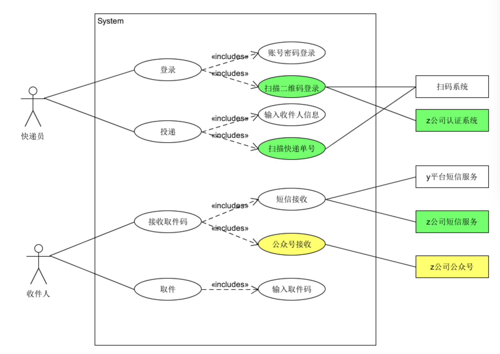

Software System Analysis & Design Homework
Homework 5
UMLet:
1. 根据订旅馆建模文档，Asg-RH.pdf：
- 用例图模型:
- make reservations用例活动图:
2. 根据课程练习“投递员使用投递箱给收件人快递包裹”的业务场景
1. 根据订旅馆建模文档，Asg-RH.pdf：
- 用正常色彩表示第一个业务流程反映的用例
- 用绿色背景表述第二个业务场景添加或修改的用例，以及支持 Actor
- 用黄色背景表述第三个业务场景添加或修改的用例，以及支持 Actor
